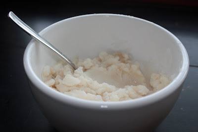

Home
Snow Cream

Description
Turn fresh snow into ice cream in 5 minutes or less. Add your own toppings.
The possibilities are endless.
Ingredients
- 8 cups of fresh clean snow
- 1 14 ounce can of sweetened condensed milk
- 1 tablespoon of vanilla extract
Steps
-
Mix snow, sweetened condensed milk, and vanilla extract in a bowl
until well mixed.
- That is all there is to it. Enjoy.